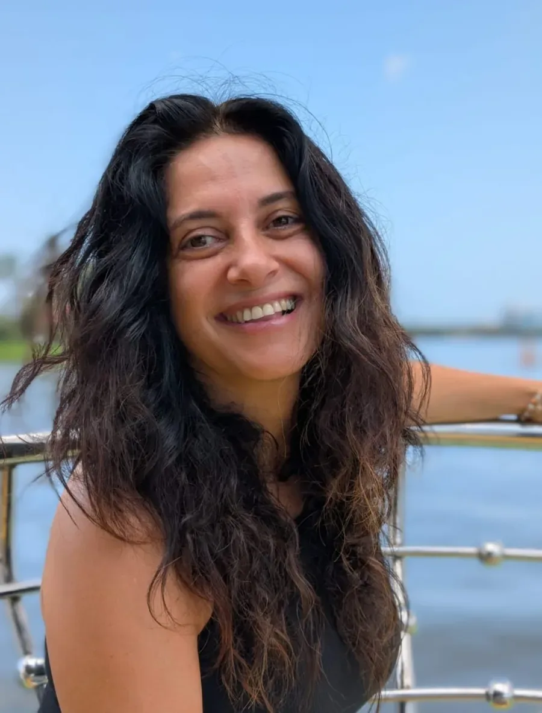
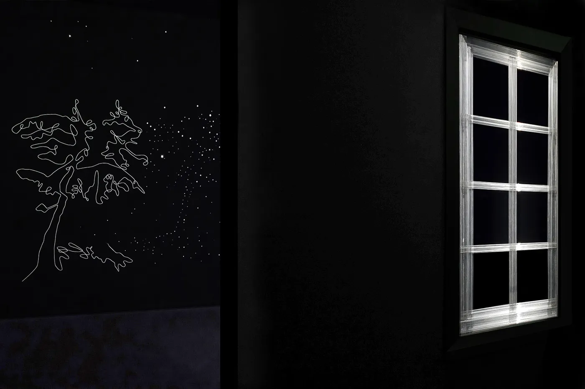
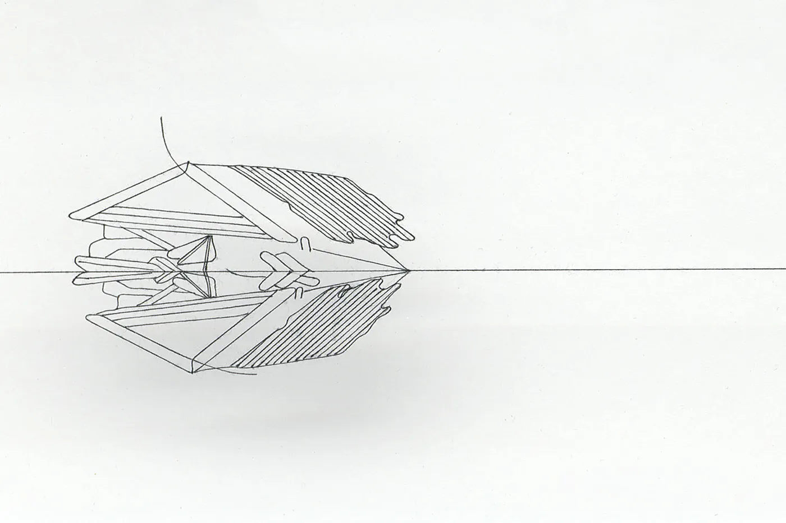
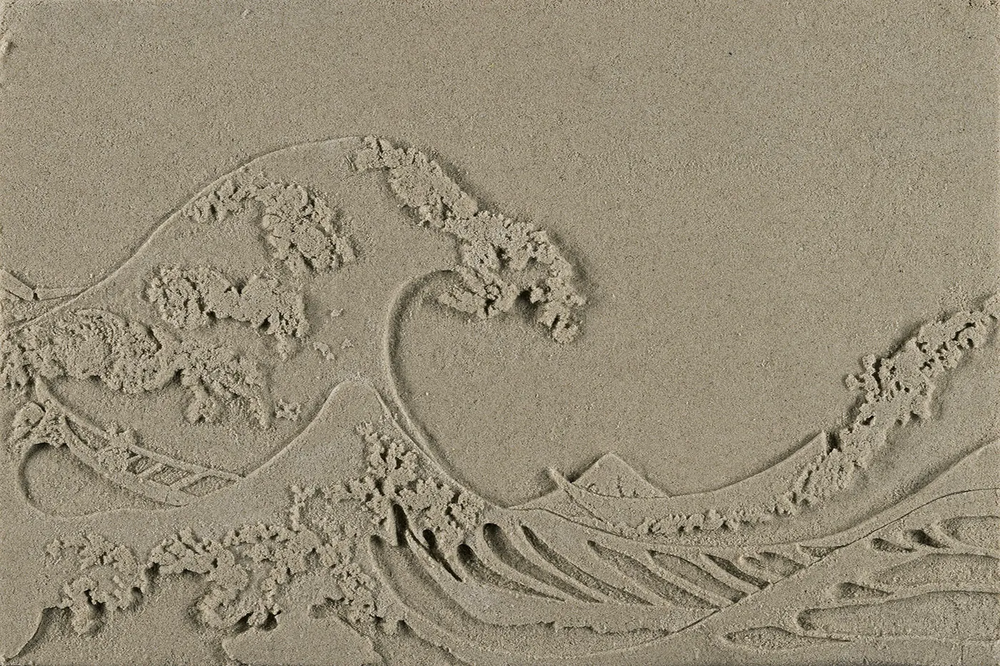

טל אמיתי-לביא
אמנית שחוקרת מה זה בית, ומנחה אנשים לחזור לגוף, לקול ולחיבור.
נולדתי ב-1969 ואני אמנית רב תחומית: רישום, ציור, פיסול, מיצב ווידאו. בעבודות שלי אני בונה בסבלנות, מחומרים פשוטים כמו חוט תפירה וחול, מבנים שבירים שתלויים בין נוכחות להיעדר. במקביל, ב-25 השנים האחרונות, אני עובדת עם גוף ומדיטציה, ומנחה ריטריטים וקבוצות שבהם אנשים נפתחים, פורקים וחוזרים אל עצמם.
- MFA, אוניברסיטת חיפה
- תערוכות במוזיאונים בארץ ובעולם
- מנחה בפרדס חנה ובגדרה

אמנות: בית שאפשר לראות דרכו
הנושא שחוזר ביצירה שלי הוא הבית: האם הוא באמת מבטיח ביטחון, יציבות והגנה. הדימוי נולד בילדות, בין אתרי בנייה לצד אבא, שהיה בנאי וקבלן. שלדי בניינים, בטון חשוף, חול במקום ריצוף ורמפות במקום מדרגות נחרטו בי, ובעבודות הם חוזרים כמבנים שבירים שתלויים בין נוכחות להיעדר.
אני עובדת בחומרים של יום יום, חוטי תפירה, חוטי דיג, סודה לשתייה וחול קינטי, ובודקת איך הם הופכים לאמנות גבוהה. כמו שאומרים, להפוך קש לזהב.



- הרצליה תערוכת יחיד במוזיאון הרצליה לאמנות עכשווית
- מיאמי תערוכת יחיד ב-Locust Projects, ומגורי אמן ב-Fountainhead
- ונציה פיינליסטית בפרס Arte Laguna
- ביאנלה ביאנלה נקאנוג'ו, יפן
ריטריטים של AUM: יום אחד, 12 שלבים
מכעס לאהבה. מבכי לצחוק. מדיטציה פעילה של קול, תנועה ומוזיקה, בקבוצה, שבה הגוף עובר דרך פורקן אל שקט עמוק.
פגשתי את AUM בתקופה משברית בחיי, של גירושין ופירוק בית ומשפחה. תירגלתי אותה אחת לחודש במשך שנים, והיא הייתה לי כלי מרכזי לחזור לעצמי, לגוף ולחיים מלאים. את המתנה הזאת אני רוצה להעניק גם לכם.ן.
הריטריט מתקיים בבית "כאן ועכשיו" בגדרה: אולם ייעודי ומרווח, חדר אוכל וחצר מוצלת, בליווי צוות לפרים מנוסה. גם אם זה עולם חדש לגמרי, מוזמנים.ות.
- אני שונא אותך
- אני אוהב אותך
- Second Wind
- קונדליני
- בית משוגעים
- ריקוד החופש
- בכי
- צחוק
- ריקוד האוהבים
- אום
- ישיבה שקטה
- נמסטה
ביודנסה עם טליה: לרקוד בלי לדעת
קבוצה שבועית חדשה בפרדס חנה, שאני מנחה יחד עם טליה נועם פלד. מוזיקה, תנועה ועיניים טובות, בלי שיפוטיות ובלי "נכון" ו"לא נכון".
- מתי
- ימי ראשון, 20:30 עד 22:30
- מתחילים
- 3.1.27
- איפה
- "יוגודה", פרדס חנה
אין צורך לדעת לרקוד. מביאים בגדים נוחים ובקבוק מים, והשאר קורה מעצמו.